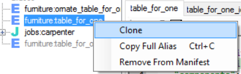
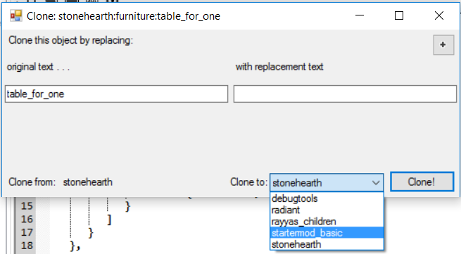
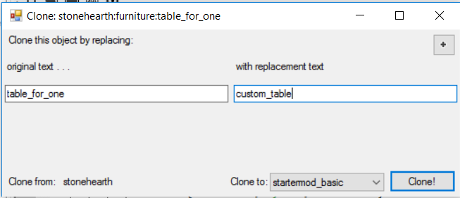
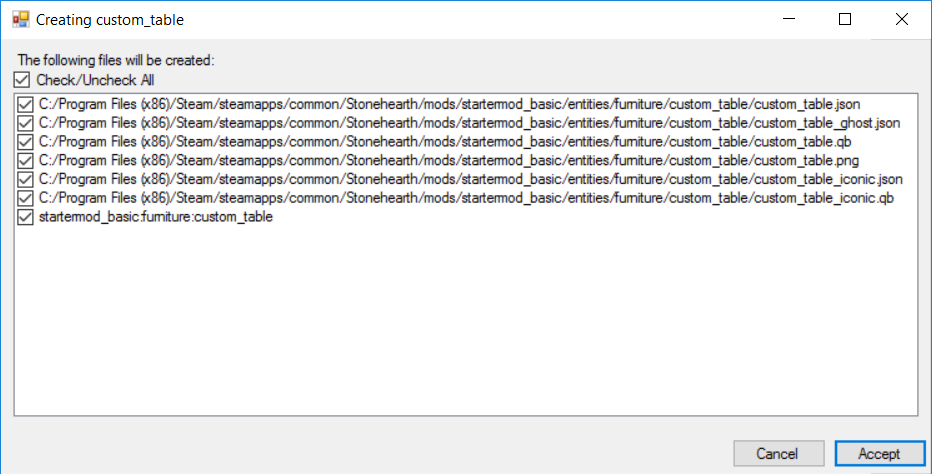
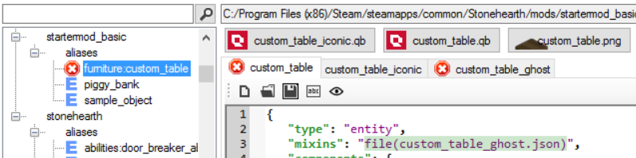
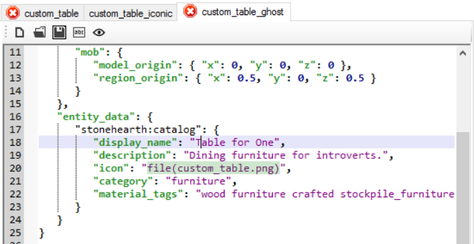
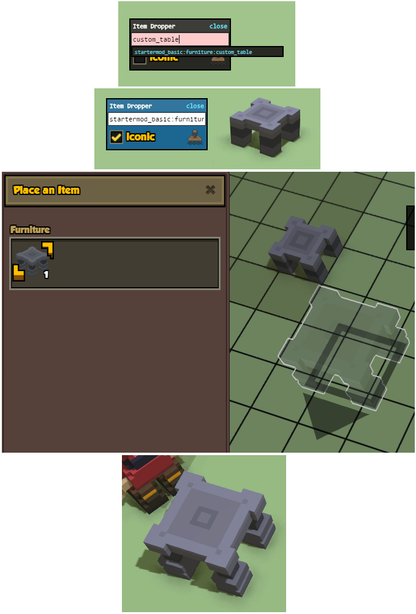

Disclaimer : instructions here are subject to become outdated or change if SHED gets updated. SHED has some bugs, so everything might not work as expected.
In order to create an item in SHED, the steps listed in this page also apply.
First, make sure you have setup SHED and that it reads both your mod and the stonehearth mod. We'll be using the startermod_basic here too for the explanation.
- Let's say we want to add a new table with roughly the same size as the table for one from the stonehearth mod.
- First we need to find this item using the search bar.
 Now, we're gonna clone it into our mod.
Now, we're gonna clone it into our mod.
 If we plan on creating a recipe for this item, we could clone the recipe instead, because that will attempt to clone the produced item too. But currently cloning of recipes is bugged, so let's clone only the item.
If we plan on creating a recipe for this item, we could clone the recipe instead, because that will attempt to clone the produced item too. But currently cloning of recipes is bugged, so let's clone only the item.
Right-click on it in the treeview and click on "Clone".

3. First of all, let's change the target mod to our mod.

Now we'll type something to replace all the "table_for_one"s for the folders and filenames. In our case, we want the item to be called "custom_table":  We could have added more replacement texts using the "+" button at the top-right if we wanted to. Now click on the "Clone!" button.
4. A list with all the files and aliases that will be created will apear:

Take some seconds to review it to make sure everything's correct (you can uncheck those that you don't want to be created), then click on "Accept".
5. Let's click on our cloned item in the treeview and check that there are no errors.

First, you'll notice that the text in the entity_data from the ghost JSON file has been unlocalized. This is necessary for the auto-localization to work correctly.

Simply click on the "Localize This File" button and it will add the corresponding keys to your mod's en.json file using the same convention that we use in stonehearth, as well as adjust our table's JSON file to point to those keys (it should auto-refresh, wait a couple seconds).
You can now Ctrl+click on the localization string, and a popup will appear and let us change the text automatically. This is a pretty convenient functionality of SHED. For those that can't use it, they can always use the search function (or search in files) from their text editor.
Now for the model. It will have cloned the model of the table and renamed it. If you have a voxel editor installed, you can click on the button with the Qubicle icon (above the tabs) to open the QB model with it, and start editing away. Make sure to re-export it again with the correct settings and name.
6. Test your mod in the game to make sure the item looks and behaves correctly.

Adding aliases in SHED
You can also add an item to your mod by right-clicking your mod name in SHED and clicking on "Add alias". This will prompt you to choose a file to reference with that alias, so you would need to have that file already created beforehand. It can be useful when you notice that some existing file from your mod will be referenced by several files and you'd like to make an alias for it.
You can also remove aliases with the option from the right-click menu, but the files they point to won't be removed from your mod. If you need to delete them, do so manually.